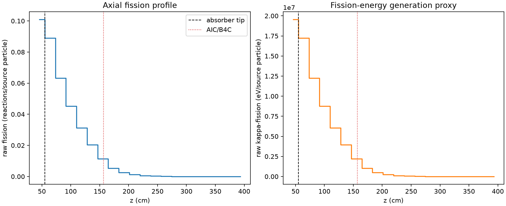
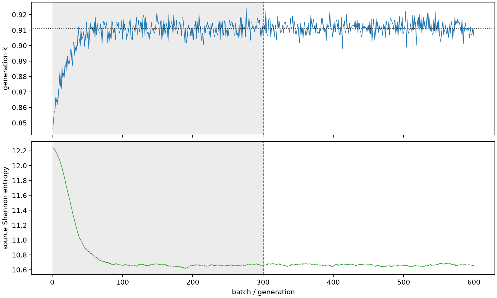

| field | value |
|---|---|
| experiment | V2-ADAPTIVE_01-0003 |
| k | 0.9112728202926849 |
| MC standard error | 0.00018403039945620654 |
| seconds | 922.8380442289927 |
| acceptance | not_assessed |
| convergence | review_required |
Completed is output integrity only; physical and statistical review required. Zero tallies do not prove zero production or zero uncertainty.
| diagnostic | value |
|---|---|
| geometric fuel voxels | 5280 |
| zero fission tally voxels | 7 |
| low signal fuel voxels | 1723 |
| low signal fission share | 0.0002551651207885813 |
| low signal kappa share | 0.00025519807044223266 |
| important fission share | 0.9500860315129644 |
| previous filter included | 3557 |
| duration estimate s | 1562.5173488400023 |
| actual minus estimate s | -639.6793046110097 |
| fission relative MC error | statistics |
|---|---|
| all_geometric_fuel | {"voxels": 5280, "positive_mean_voxels": 5273, "zero_mean_voxels": 7, "undefined_relative_error_voxels": 7, "median": 0.05757735573905536, "p95": 0.8077998544217302, "maximum": 1.0000000000000002} |
| low_signal | {"voxels": 1723, "positive_mean_voxels": 1716, "zero_mean_voxels": 7, "undefined_relative_error_voxels": 7, "median": 0.5232982953750158, "p95": 0.9460103778315925, "maximum": 1.0000000000000002} |
| important_95pct | {"voxels": 1640, "positive_mean_voxels": 1640, "zero_mean_voxels": 0, "undefined_relative_error_voxels": 0, "median": 0.0076915063888214775, "p95": 0.012972530392195867, "maximum": 0.017734776102070842} |
| outside_previous_filter | {"voxels": 1723, "positive_mean_voxels": 1716, "zero_mean_voxels": 7, "undefined_relative_error_voxels": 7, "median": 0.5232982953750158, "p95": 0.9460103778315925, "maximum": 1.0000000000000002} |
| kappa_fission relative MC error | statistics |
|---|---|
| all_geometric_fuel | {"voxels": 5280, "positive_mean_voxels": 5273, "zero_mean_voxels": 7, "undefined_relative_error_voxels": 7, "median": 0.05747377830967771, "p95": 0.8066196361002246, "maximum": 1.0000000000000002} |
| low_signal | {"voxels": 1723, "positive_mean_voxels": 1716, "zero_mean_voxels": 7, "undefined_relative_error_voxels": 7, "median": 0.5225727550088208, "p95": 0.9462185000565558, "maximum": 1.0000000000000002} |
| important_95pct | {"voxels": 1640, "positive_mean_voxels": 1640, "zero_mean_voxels": 0, "undefined_relative_error_voxels": 0, "median": 0.007680444239427403, "p95": 0.012950467559799662, "maximum": 0.01770804821420637} |
| outside_previous_filter | {"voxels": 1723, "positive_mean_voxels": 1716, "zero_mean_voxels": 7, "undefined_relative_error_voxels": 7, "median": 0.5225727550088208, "p95": 0.9462185000565558, "maximum": 1.0000000000000002} |
| axial bin | fission share | kappa-fission share |
|---|---|---|
| 1 | 0.2715877295970176 | 0.2715437967638644 |
| 2 | 0.23979667388229783 | 0.239807711964275 |
| 3 | 0.17030816596951803 | 0.17031800839660283 |
| 4 | 0.12155970828577788 | 0.12156718470824215 |
| 5 | 0.08416000738387047 | 0.08416494083355085 |
| 6 | 0.05490848120504405 | 0.0549118700756314 |
| 7 | 0.030488925050266933 | 0.030491871794291702 |
| 8 | 0.014303295187852325 | 0.014305597297644378 |
| 9 | 0.006733858186131106 | 0.006734849788425561 |
| 10 | 0.003193421473749907 | 0.0031939293889977367 |
| 11 | 0.0015540764048912676 | 0.0015543176501313552 |
| 12 | 0.0007068418905773698 | 0.0007069945091506875 |
| 13 | 0.00035209715194232293 | 0.0003521717873944028 |
| 14 | 0.00018747349744068872 | 0.00018748426842661792 |
| 15 | 8.280522473799981e-05 | 8.282602119564438e-05 |
| 16 | 4.0876123851003915e-05 | 4.087790072254995e-05 |
| 17 | 1.7117093545734244e-05 | 1.7120698932166204e-05 |
| 18 | 8.977795031551132e-06 | 8.975861280061617e-06 |
| 19 | 6.501217151655059e-06 | 6.501636706635376e-06 |
| 20 | 2.9673793042977906e-06 | 2.9686545340939572e-06 |
Histories include the inactive-to-active transition at batch 300. kappa-fission approximates fission energy production, not total heat deposition.

